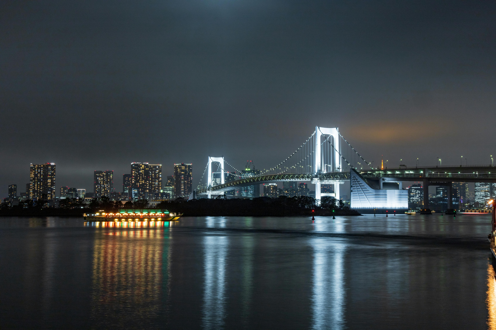
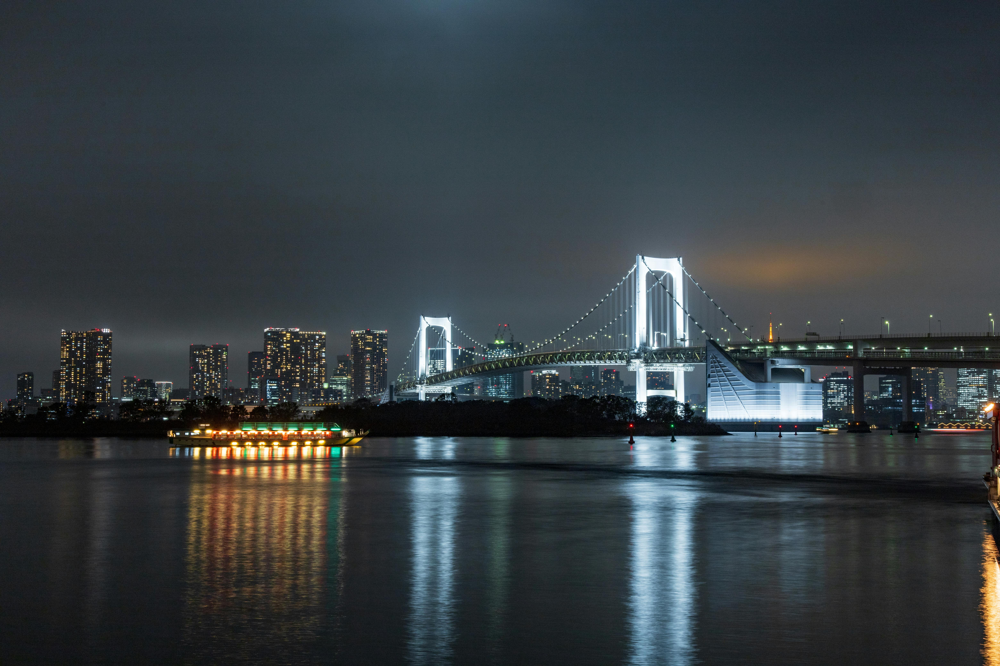

Why Tokyo?
Tokyo is one of the largest cities in the world
Many tourists come to visit Tokyo from all over the world, but why? From historical sites to pop culture spots, and skyscrapers to nature parks, Tokyo has so many things to offer to whoever is traveling here. The reasons why you should visit Tokyo are numerous, and we’ll break them down into 10 main reasons for you!
Cityscape & Scramble Crossing (Shibuya)
Nature Parks
Pop Culture (Harajuku)
Izakaya (Shinjuku)
Historical Area (Yanesen)
Fish Market (Tsukiji)
Convenient transportation system
Temples & Shrines (Asakusa)
Anime & Games (Nakano & Akihabara)
Hiking (Mt. Takao)
Enjoy your jurney
Best hotel, restaurant and of course, Totoro
Best hotel
Andaz Tokyo
Be inspired at Andaz Tokyo Toranomon Hills, where design and culture merge in one of the world’s most exciting cities. From atop a 52-story skyscraper that’s part of a revolutionary complex project in the Toranomon District of Minato, marvel at the spectacular views of the city from our spacious and modern Japanese rooms and suites. Discover centuries-old temples and shrines as you walk to the nearby Imperial Palace and Tokyo Tower or take in the vibrant sunset over Tokyo with a seasonal cocktail at our iconic Rooftop Bar.
Adress: Tokyo, Minato-ku, Toranomon 1-23-4
Map
Best restaurant
Ise Sueyoshi
Ranked No.1 in Japan. Honored to be named the 2nd Best Fine
Dining Restaurant in the World by Tripadvisor.
Kappo Ise Sueyoshi in the heart of Tokyo is ideal for enjoying
the four seasons of Japan on a plate. It is very small
restaurant, which has only five seats at the counter and six
tables.
Adress: 4-2-15 Mizuno Bldg. 3F, Nishiazabu, Minato 106-0031 Tokyo
MapSouvenirs
Studio Ghibli
Studio Ghibli souvenirs and merchandise are high on the shopping list of any Ghibli fan visiting Japan. But with so many different animation and film franchises, and so many pop culture shops to visit, it’s hard to know where to go first! But don’t worry, if you’re looking for Totoro plush toys, Kiki’s Delivery Service souvenirs, or Spirited Away stationery, then we know the perfect place for you!.
Adress: 4-2-15 Mizuno Bldg. 3F, Nishiazabu, Minato 106-0031 Tokyo
Ghibli MuseumGallery
My photos from Tokyo


 
